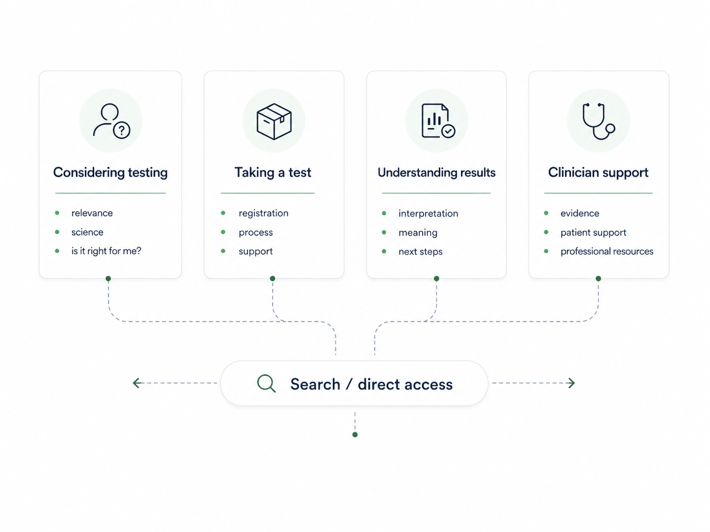
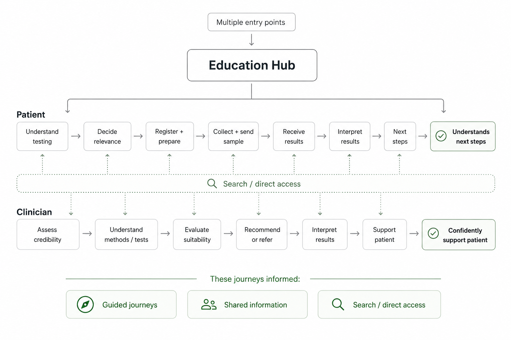

Designing a clearer Learn Hub for microbiome testing

A UK-based biotechnology company needed to make microbiome testing easier to understand for patients and clinicians. In a wider context of competing claims about the microbiome and its relationship to health, complex information about the science, testing process and personal relevance needed to be made clear and accessible.
How could one hub support patients and clinicians with different needs at different stages — from considering testing, through the testing process, to interpreting results?
I led discovery research into user journeys and information retrieval, mapped user flows, developed the information architecture and explored search and filtering patterns. I brought research evidence into team discussions to challenge assumptions and evaluate different approaches, contributed to the prototype, and tested the experience with users.
Working as part of a design team, we reorganised the learning hub around user intent and testing stage, creating clearer routes for assessing whether testing was relevant, completing a test, understanding results and accessing professional support.
The challenge
The challenge was to support multiple journeys. We needed a structure that could:
- guide users who were unsure where to start;
- guide users through the actual testing process;
- give direct access to those who knew what they needed.

Case-study stages
- 01DiscoverResearch and user needs
- 02DefineJourneys, synthesis and information architecture
- 03DevelopTesting, evidence and iteration
- 04OutcomeDelivered concept and next validation
Researching different information needs
I interviewed two clinicians and one patient, alongside reviewing existing client research and content. The research highlighted different needs that had to be resolved through the information design: patients wanted clear, personally relevant explanations, while clinicians needed evidence, limitations and enough detail to interpret and discuss results confidently.
Patient need
Clear personal relevance
Patients needed plain-language explanations of what testing could mean for them and what to do next.
Design implicationGuide people through the journey while keeping specific answers easy to reach.
Clinician need
Evidence with appropriate depth
Clinicians needed methodology, limitations and credible detail to interpret results and support patients.
Design implicationProvide a distinct professional route within the same information system.
Turning journeys into a shared structure
I mapped the research into representative user flows, using them to identify where users needed guided navigation, where information required different levels of depth, and where search or direct access needed to cut across the structure. I then developed the information architecture and search/retrieval approach, synthesising competing proposals into a structure I brought into the team for critique and alignment.


Using testing evidence to refine the system
Testing the first design
I designed the usability study around three evaluation dimensions: usefulness, efficiency and user satisfaction. Rather than looking only at whether someone completed a task, I wanted to understand whether they found information that genuinely helped, how much friction they encountered getting there, and how confident they felt once they had found it.
I translated the main risks from discovery into scenario-based tasks and defined success criteria before testing. Alongside task completion, I tracked measures such as first-click success, path deviation, comprehension and confidence. This helped distinguish between users eventually finding an answer and the information structure actually helping them get there efficiently and with confidence.
Useful
Did users find information that helped them understand or decide?
Task completion, comprehension, next-step clarity.
Efficient
Could users reach the right information without unnecessary friction?
First-click success, path deviation, hesitation.
Satisfying
Did users feel confident and supported using what they found?
Confidence, reassurance, perceived clarity.
- Entry points71%suitability success71%significant path deviation
- Search86%search success71%filter or chip issue
- Results + next steps100%success100%next-step clarity
Later-stage support performed strongly, while access and retrieval needed refinement. The updated homepage, search and information architecture were not retested within the project timeframe.
Clearer entry points and information architecture
Testing showed a gap between usefulness and efficiency. 71% of users found the information they needed to assess whether testing was suitable, but 71% also showed significant path deviation getting there.
The homepage gave search too much prominence while the guided routes were less visible. We rebalanced the experience by reducing the dominance of search and replacing the expandable journey navigation with visible cards, so users could recognise the main testing stages without first having to understand the site structure.
I also simplified the underlying information architecture, consolidating overlapping testing content around clearer user needs and stages. The revised structure kept direct access available while giving users a more obvious route through before, during and after testing.


Search and information retrieval
Search itself was not the main problem. 86% of users completed the search task successfully, but 71% encountered an issue with filters or chips. Users could reach relevant content, but the results screen did not make it clear what was active, suggested or most relevant.
From the testing evidence, I identified ambiguity in the retrieval model. We redesigned the results view so active filters were separated from suggested terms and the most relevant article had stronger visual priority. This kept search as a fast route for users who knew what they needed, rather than asking it to replace the guided information architecture.
We also explored a plain-English AI summary as a possible quick-answer layer. I treated this as an unvalidated hypothesis: it still needed clear clinical and content guardrails, alongside further usability testing, before we could say it improved understanding.


Clinician route and contextual support
Testing showed that professional users were not recognising where clinician-specific support lived. Only 33% achieved partial success, while 67% showed high path deviation; no participant found the clinician route without some uncertainty.
I had identified during discovery that clinicians needed a different level of information — evidence, testing methodology, suitability and material they could use when supporting patients. I consolidated those requirements within the information architecture rather than leaving professional content distributed across the hub.
We then made Clinician Resources more visible from the homepage and grouped professional information into a clearer route, so clinicians could assess the service, understand testing and find patient-support material without having to infer where it belonged.


Supporting finding
Terminology without losing context
The same principle applied at a smaller scale to scientific terminology. Glossary definitions were useful once found, but only 33% fully completed the task and 67% showed significant path deviation.
We changed the interaction so definitions opened in context, with clearer visual signposting that help was available. This let users understand unfamiliar terminology without leaving the content they were reading.


A connected concept, with validation still to do
The final concept brought guided patient journeys, search, contextual definitions and clinician resources together within one Learn Hub. Testing showed that later-stage support helped users understand results and identify next steps, while entry points, search controls and the clinician route still created friction. The revised design was not retested within the project timeframe, so these changes remain evidence-led directions requiring validation.
Reflection
Structure carries meaning
The project strengthened my view that search could not compensate for unclear information architecture. Clear language mattered, but people also needed routes shaped around their stage, intent and level of knowledge. For the company, uncertainty about suitability, credibility or next steps could weaken confidence and cause people to leave the journey. This commercial risk remains a hypothesis, rather than a measured outcome.
Next validation
Test the revised routes
My next step would be to retest the revised design with larger, more representative patient and clinician groups, capture time on task, and examine where users believe education ends and medical advice begins. I would then connect usability evidence with business signals such as journey drop-off, engagement with clinician resources and avoidable support enquiries.